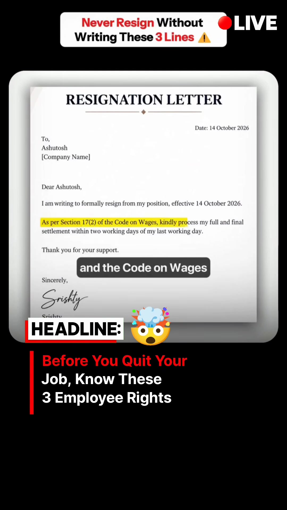
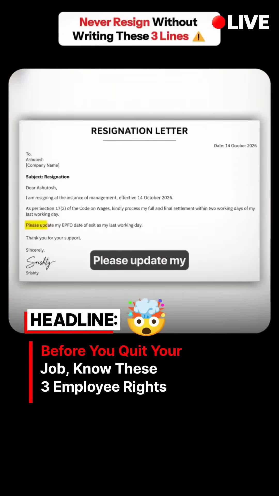

Career · Employment-Rights
3 Critical Resignation Clauses Under Indian Employment Law: Full Settlement, Forced Exits & EPFO
Key Takeaways
- Full & Final (F&F) Settlement Timeline (Section 17(2)): Employers often delay F&F payouts claiming a 45–60 day corporate policy. Under Section 17(2) of the Code on Wages, 2019, wages and dues are mandated to be paid within two working days of the employee's last working day.
- Forced Resignation Protection: Never write "due to personal reasons" if forced to resign during silent layoffs or management pressure. Explicitly state: "I am resigning at the instance of management" to preserve termination records for legal disputes and severance.
- Mandatory EPFO Date of Exit: Explicitly mandate in writing: "Please update my EPFO date of exit as my last working day." Omitting this leads to frozen PF transfers, withdrawal rejections, and bureaucratic employer delays.
The Corporate Exit Trap in India
When software engineers and corporate employees submit resignations, standard HR templates frequently manipulate language to favor the company. Without precise legal phrasing in the formal resignation email, employees forfeit statutory settlement timelines and surrender leverage in forced termination disputes.
The 3 Essential Legal Clauses
1. Enforcing Full & Final Settlement in 2 Days (Not 60 Days)
HR departments standardly claim: "Full and final settlement takes 45 to 60 days as per company policy." However, statutory law supersedes internal corporate HR guidelines.

Exact Resignation Clause:
"As per Section 17(2) of the Code on Wages, kindly process my full and final settlement within two working days of my last working day."
This covers unpaid basic salary, accrued leave encashment, pending reimbursements, and statutory gratuity entitlements.
2. Countering Forced Resignations
During restructuring, performance PIP traps, or silent layoffs, management routinely asks employees to submit a "voluntary resignation" to avoid paying severance or triggering regulatory retrenchment filings.
Exact Protective Clause:
"I am resigning at the instance of management, effective [Last Working Date]."
Why this matters: If you write "due to personal reasons" or "for better opportunities", you legally waive constructive dismissal claims. Documenting that the exit was executed at the instance of management ensures contemporaneous evidence for legal counsel, severance discussions, and unemployment documentation.
3. EPFO Date of Exit Synchronization
Over 90% of employees experience delays when transferring their Provident Fund (PF) to a new employer because the previous employer fails to update the Date of Exit (DOE) in the EPFO Unified Portal.

Exact EPFO Clause:
"Please update my EPFO date of exit as my last working day."
Standard Resignation Email Template
To: [Manager's Name], [HR Partner Email]
Subject: Resignation Letter — [Your Full Name] — [Employee ID]
Dear [Manager's Name],
I am writing to formally resign from my position as [Designation] at [Company Name], effective [Current Date]. My last working day will be [Date of Last Working Day], completing my contractual notice period.
As per Section 17(2) of the Code on Wages, kindly process my full and final settlement within two working days of my last working day.
Furthermore, please ensure my EPFO date of exit is updated in the Unified Portal matching my last working day.
I will ensure a complete and seamless handover of all project deliverables, documentation, and company assets prior to my departure.
Sincerely,
[Your Full Name]
[Employee ID]
[Contact Number]
Original Source Reference
Instagram Reel: https://www.instagram.com/reel/Demtd7OtE8O/
Creator: @briefonlive (Original Credit: @ba_with_rajesh)
Caption: "THINKING OF RESIGNING? KNOW THESE 3 IMPORTANT THINGS BEFORE SENDING THAT EMAIL! Full & Final Settlement, Resignation Under Pressure, EPFO Date of Exit..."